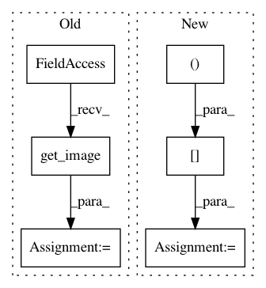

2c339f08da80a6a6d52df37b64fe148155a13e86,cellprofiler/modules/align.py,Align,apply_alignment,#Align#Any#Any#Any#Any#Any#Any#,426
Before Change
off_x, off_y, most_cropped_image_name):
image = workspace.image_set.get_image(input_image_name,
must_be_grayscale = True)
most_cropped_image = workspace.image_set.get_image(most_cropped_image_name)
"""Create an output image that"s offset by the given // of pixels"""
pixels = most_cropped_image.crop_image_similarly(image.pixel_data)
output_pixels = np.zeros(pixels.shape)
//
// Copy the input to the output
//
p1,p2 = offset_slice(pixels, output_pixels, off_y, off_x)
p2[:,:] = p1[:,:]
if off_x != 0 or off_y != 0:
//
// Construct a mask over the zero-filling
//
mask = np.zeros(output_pixels.shape, bool)
p1, m2 = offset_slice(pixels, mask, off_y, off_x)
m2[:,:] = True
if image.has_mask:
After Change
p2[:,:] = p1[:,:]
output_mask = np.zeros(shape, bool)
p1, p2 = offset_slice(image.mask, output_mask, off_y, off_x)
p2[:,:] = p1[:,:]
if np.all(output_mask):
output_mask = None
crop_mask = np.zeros(image.pixel_data.shape, bool)
p1, p2 = offset_slice(crop_mask, output_pixels, off_y, off_x)
In pattern: SUPERPATTERN
Frequency: 3
Non-data size: 6
Instances
Project Name: CellProfiler/CellProfiler
Commit Name: 2c339f08da80a6a6d52df37b64fe148155a13e86
Time: 2011-02-24
Author: leek@1fc53939-2000-0410-845c-e8453a809027
File Name: cellprofiler/modules/align.py
Class Name: Align
Method Name: apply_alignment
Project Name: CellProfiler/CellProfiler
Commit Name: dd146de9ff9a3adbea8404dde409493f7d6819ae
Time: 2013-02-28
Author: leek@broadinstitute.org
File Name: cellprofiler/modules/tests/test_applythreshold.py
Class Name: TestApplyThreshold
Method Name: test_05_04_otsu3_wv_high
Project Name: CellProfiler/CellProfiler
Commit Name: dd146de9ff9a3adbea8404dde409493f7d6819ae
Time: 2013-02-28
Author: leek@broadinstitute.org
File Name: cellprofiler/modules/tests/test_applythreshold.py
Class Name: TestApplyThreshold
Method Name: test_05_03_otsu3_wv_low